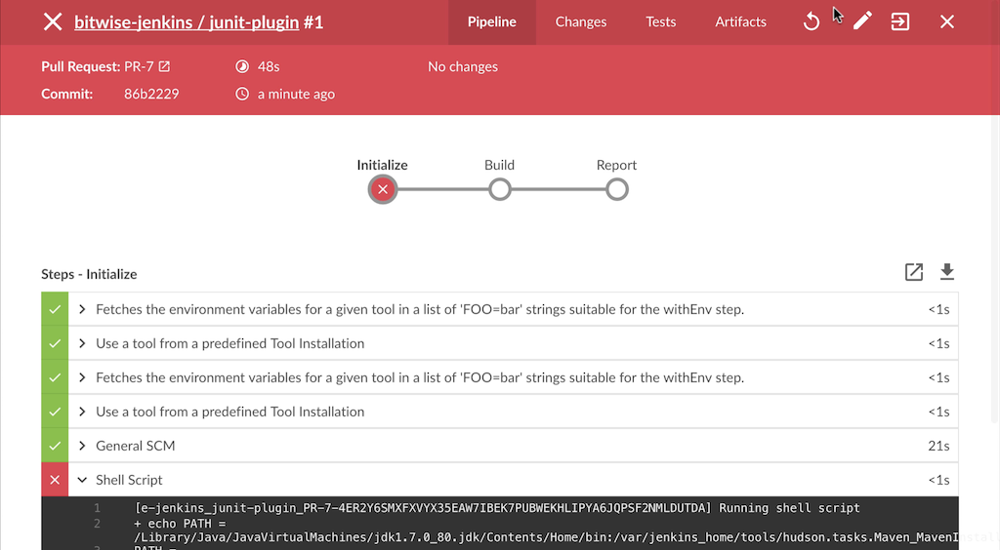

Pipeline Run Details View
The Blue Ocean Pipeline Run Details view shows the information related to a single Pipeline Run, and allows users to edit or replay that run. Below is a detailed overview of the parts of the Run Details view.
|
Blue Ocean status
Blue Ocean will not receive further functionality updates. Blue Ocean will continue to provide easy-to-use Pipeline visualization, but it will not be enhanced further. It will only receive selective updates for significant security issues or functional defects. |
-
Run Status - An icon indicating the status of this Pipeline run. The color of the navigation bar matches the status icon.
-
Pipeline Name - The name of this run’s Pipeline.
-
Run Number - The id number for this Pipeline run. Id numbers are unique for each Branch and Pull Request of a Pipeline.
-
View Tabs - Access the Pipeline, Changes, Tests, and Artifacts views with one of the tabs for this run. The default view is "Pipeline".
-
Re-run Pipeline - Execute this run’s Pipeline again.
-
Edit Pipeline - Open this run’s Pipeline in the Pipeline Editor.
-
Configure - Open the Pipeline configuration page in Jenkins.
-
Go to Classic - Switch to the "Classic" UI view of the details for this run.
-
Close Details - Closes the Details view and returns the user to the Activity view for this Pipeline.
-
Branch or Pull Request - The branch or pull request for this run.
-
Commit Id - The commit id for this run.
-
Duration - The duration of this run.
-
Completed Time - When this run was completed.
-
Change Author - Names of the authors with changes in this run.
-
Tab View - Shows the information for the selected tab.
Pipeline Run Status
Blue Ocean makes it easy to see the status of the current Pipeline Run, by changing the color of the top menu bar to match the status:
-
Blue for "In progress"
-
Green for "Passed"
-
Yellow for "Unstable"
-
Red for "Failed"
-
Gray for "Aborted"
Special cases
Blue Ocean is optimized for working with Pipelines in Source Control, but can display details for other kinds of projects. Blue Ocean offers the same tabs for all supported projects types, but those tabs display different information depending on the type.
Pipelines outside of Source Control
For Pipelines that are not based in Source Control, Blue Ocean shows the "Commit Id", "Branch", and "Changes", but those fields are left blank. In this case, the top menu bar does not include the "Edit" option.
Freestyle Projects
For Freestyle projects, Blue Ocean offers the same tabs, but the Pipeline tab only displays the console log output. The "Rerun" or "Edit" options are not available in the top menu bar.
Tabs
Each tab of the Run Detail view provides information on a specific aspect of a run.
Pipeline
Pipeline is the default tab and gives an overall view of the flow of this Pipeline Run. It shows each stage and parallel branch, the steps in those stages, and the console output from those steps. The overview image above shows a successful Pipeline run. If a particular step during the run fails, this tab automatically defaults to showing the console log from the failed step. The image below shows a failed Run.

Changes
The Changes tab displays the information of any changes made between the most recently completed and current runs. This includes the commit id for the change, change author, message, and date completed.

Tests
The Tests tab shows information about test results for this run.
This tab only contains information if a test result publishing step is present, such as the "Publish JUnit test results" (junit) step.
If no results are recorded, this table displays a message.
If all tests pass, this tab will report the total number of passing tests.
If there are failures, the tab will display log details from the failures as shown below.

When a previous run has failures, and the current run fixes those failures, this tab notes the fixes and displays their logs.


Please submit your feedback about this page through this quick form.
Alternatively, if you don't wish to complete the quick form, you can simply indicate if you found this page helpful?
See existing feedback here.